Guide d'utilisation
Du lien à la diapositive
en une minute
Créez des QR codes personnalisés et des citations scientifiques avec un QR vers l'article, prêts pour vos diapositives.
Guide d'utilisation
Créez des QR codes personnalisés et des citations scientifiques avec un QR vers l'article, prêts pour vos diapositives.
Sommaire
QR Lab transforme un lien, un contact ou un réseau Wi-Fi en QR code au style de vos diapositives, et un article scientifique en citation avec un QR vers l'article.
Dans le navigateur
niki977.github.io/ultraspeaker-qr-lab, sur ordinateur et téléphone. Les QR se téléchargent en PNG ou SVG pour PowerPoint, Keynote ou un document ; les citations se copient.
Dans PowerPoint
Onglet Accueil → groupe The Ultraspeaker → QR Lab. Le volet s'ouvre à droite et insère QR et citations dans la diapositive sélectionnée.
Bientôt disponible
Le volet PowerPoint est en test et sera disponible prochainement. Ce guide le décrit déjà entièrement.
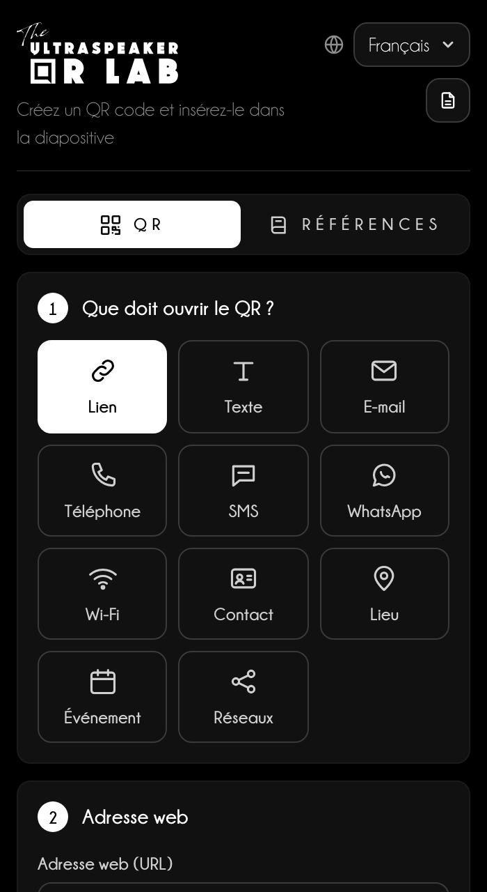
Ce qui reste sur l'appareil
Langue, design, QR récents, modèles et références restent dans la mémoire du navigateur ; dans PowerPoint, les références restent dans le fichier. Le mot de passe Wi-Fi n'est jamais enregistré.
Les étapes à gauche, l'aperçu toujours visible à droite.
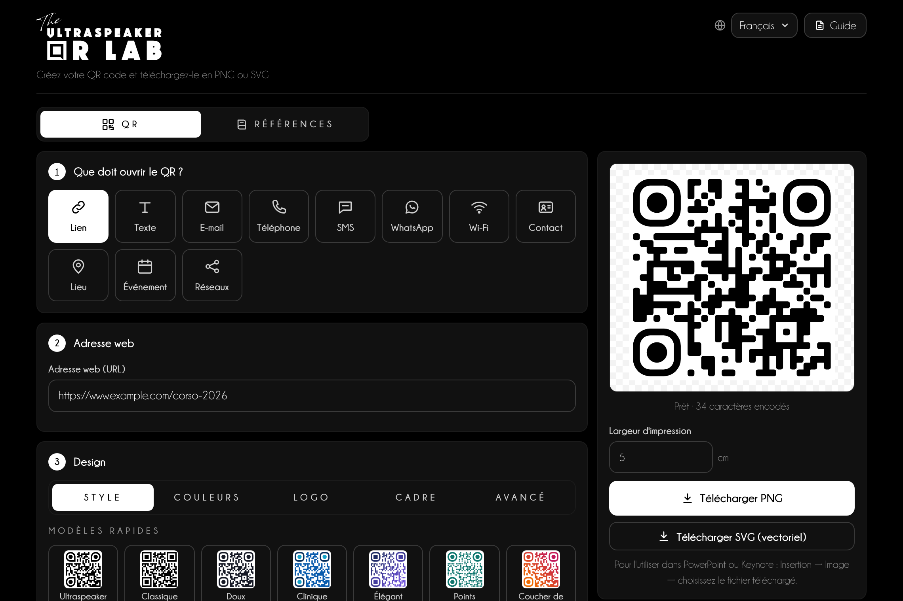
1234567Un QR vers la page de votre formation, pour la dernière diapositive de votre intervention.
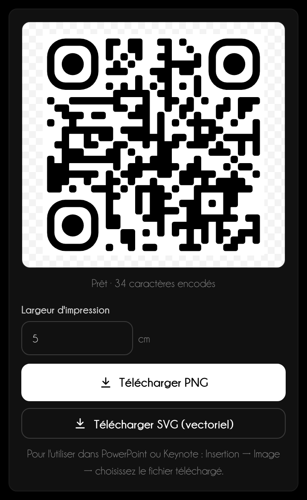
Onze types : chacun compose le contenu au format reconnu par le téléphone.
| Type | Ce qui se passe quand on le scanne |
|---|---|
| Lien | Ouvre une page web. |
| Texte | Affiche un texte court. |
| Prépare un message avec destinataire, objet et texte. | |
| Téléphone et SMS | Appelle ou prépare un SMS. |
| Ouvre une conversation. | |
| Wi-Fi | Connecte au réseau avec nom, sécurité et mot de passe. |
| Contact | Enregistre une carte de visite dans le carnet d'adresses. |
| Position | Ouvre la carte à partir d'une adresse ou de coordonnées. |
| Événement | Ajoute un événement à l'agenda. |
| Réseaux sociaux | Ouvre un profil : le nom d'utilisateur suffit. |
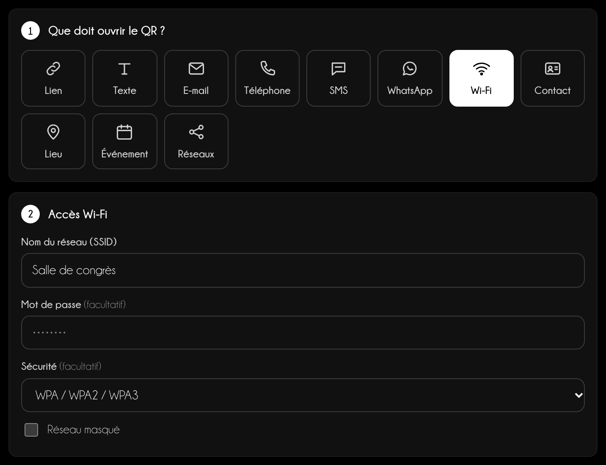
Wi-Fi
Le mot de passe sert seulement à créer le code : il n'est jamais enregistré, pas même dans les QR récents.
Le design change l'apparence, pas le contenu : testez toujours le scan avec un téléphone.
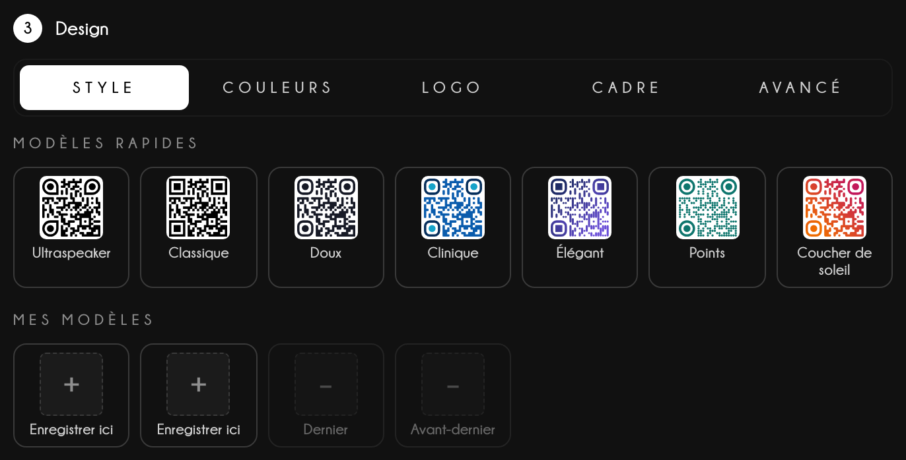
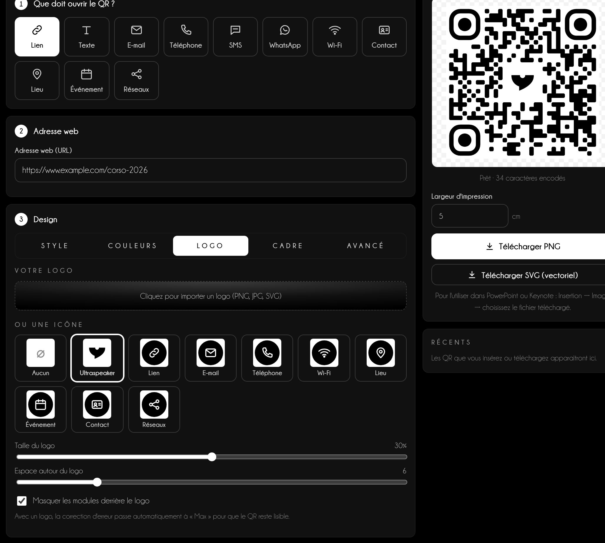
Dans la section Références, un DOI, un PMID ou quelques mots du titre deviennent une citation avec un QR qui ouvre l'article.
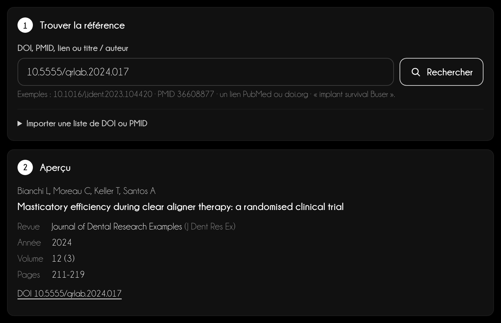
12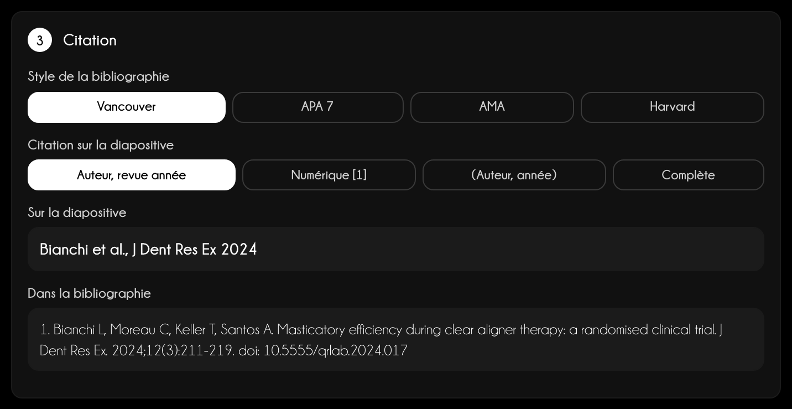
Sources
Crossref, PubMed (NCBI) et Unpaywall, interrogés directement depuis votre appareil. Les avertissements sont une aide : vérifiez toujours les citations importantes à la source.
Chaque article inséré ou ajouté entre dans Références de la présentation : la numérotation, les diapositives finales et le PDF pour le public partent de là.
Le PDF de la bibliographie
Télécharger le PDF demande le Titre de la conférence (obligatoire), l'intervenant et la date, et ce qu'il faut placer dans chaque entrée : Texte, Lien et QR s'activent un par un, au moins un reste actif. « Vider la bibliographie » vide la liste en deux clics ; les diapositives ne changent pas. Le PDF a des pages blanches, une liste sans numéros dans l'ordre choisi et « powered by The Ultraspeaker » en bas. Sur téléphone, il se partage ; depuis le volet PowerPoint, il s'ouvre dans le navigateur.
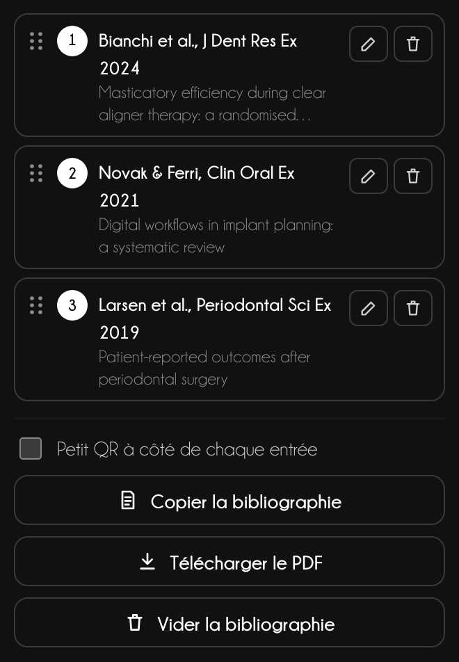
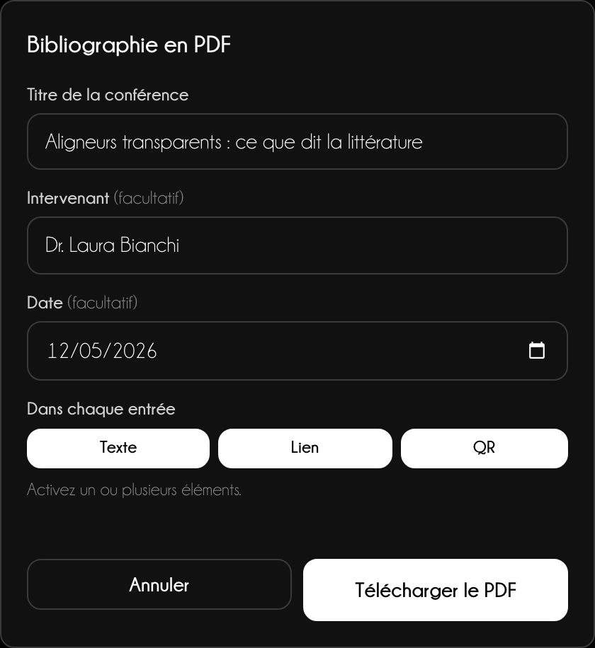
Le même QR va sur la diapositive, dans Keynote ou à l'impression : seul le format change.
Version web
Télécharger PNG crée une image à 300 dpi pour la Largeur d'impression indiquée ; Télécharger SVG (vectoriel) reste net à toutes les tailles. Sur téléphone, Enregistrer ou partager ouvre le menu de partage : Photos, WhatsApp, Mail. Dans Références, le bouton principal copie la citation.
PowerPoint
Choisissez PNG ou Vectoriel et la Largeur sur la diapositive, puis Insérer dans la diapositive. Pour les citations, choisissez une mise en page, ce qu'il faut insérer (Citation + QR, Citation seule, QR seul), la position, la police et la couleur : texte et QR sont groupés en bas de la diapositive.
Bientôt disponible
Le volet PowerPoint est en test et sera disponible prochainement. Ce guide le décrit déjà entièrement.
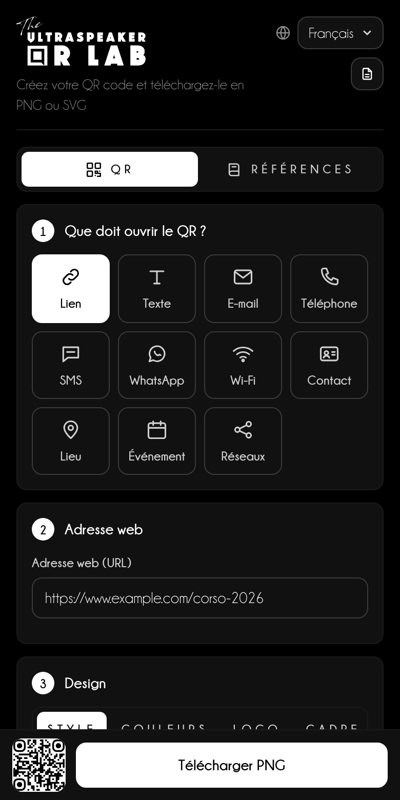
Un QR ne fonctionne que si le public peut le scanner depuis sa place.
Conseil d'orateur
Laissez le QR à l'écran au moins 10 secondes et invitez à voix haute : « Scannez le code pour télécharger les diapositives ». Sans invitation, presque personne ne sort son téléphone.
| Salle | Distance du dernier rang | Côté du QR à l'écran |
|---|---|---|
| Petite salle | jusqu'à 10 m | au moins 1/6 de la hauteur de la diapositive |
| Salle de congrès | 10–25 m | au moins 1/4 de la hauteur |
| Plénière | plus de 25 m | au moins 1/3, seul sur la diapositive |
Citations
Placez la citation en bas à gauche, 14–16 pt, en gris : lisible sans détourner l'attention. Le PDF de la bibliographie, envoyé après l'intervention, vaut plus que dix diapositives de références.
Assistance
Écrivez à info@theultraspeaker.com en indiquant l'ordinateur et la version de PowerPoint.

Knowledge is not enough.
From expert to Ultraspeaker.
theultraspeaker.com · info@theultraspeaker.com